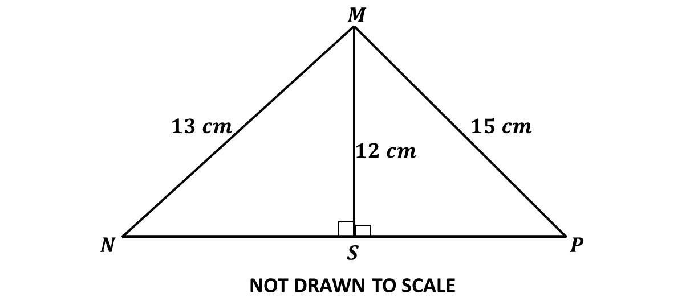

BECE
Year to Practice:
1990
1991
1992
1993
1994
1995
1996
1997
1998
1999
2000
2001
2002A
2002B
2003
2004
2005
2006
2007
2008
2009
2010
2011
2012
2013
2014
2015
2016
2017
2018
2019
2020
2021
2022
2023
2024
PAST QUESTIONS 2018
Time yourself to improve on your speed. You are to use not more than 60 minutes for this section.
Click on the link below when you are ready.
Try the questions first, using not more than 15 minutes for each question, and watch the accompanying videos to see how the questions are solved.
Question 1
-
Solve the inequality \(5x - 3 \geq \frac{15x - 11}{2}\) and represent the answer on a number line.
-
Given that \(\mathbf{t} = \begin{pmatrix}-1 \\ 3\end{pmatrix}\) and \(\mathbf{k} = \begin{pmatrix}2 \\ -4\end{pmatrix}\), find \(2\mathbf{t} + \mathbf{k}\)
-
The sides of a triangle are in the ratio 6:8:10. If the perimeter of the triangle is 288cm, find the
\(\hspace{0.5cm} i)\) longest side
\(\hspace{0.5cm} ii)\) shortest side
\(\hspace{0.5cm} iii)\) difference between the longest and shortest sides.
Question 2
-
An English textbook costs Gh₵25.00. The author of the book agreed to take 20\(\%\) of the cost of each book sold. If 1,702 copies were sold, calculate the authors's share.
-
Simplify: \((\frac{2}{15} + \frac{2}{5}) + (\frac{9}{10} \times \frac{4}{3}) + (\frac{1}{5} \div \frac{1}{4})\)
-
\(\)

In the diagram, \(|MN| = 13\) cm, \(|MP| = 15\) cm, \(|MS| = 12\) cm and \(\overline{MS}\) is perpendicular to \(\overline{NP}\). Calculate length \(NP\).
Question 3
-
Simplify \(\frac{0.084 \times 0.81}{0.027 \times 0.04}\), leaving your answer in standard form.
-
\(i)\) Make \(r\) the subject of the relation \(y = \frac{x - r}{x + r}\)
\(\hspace{0.5cm} ii)\) From \((b)(i)\), find the value of \(r\) when \(y = 3\) and \(x = 10\).
-
Juliet bought 1,756 kg of frozen chicken, 675 g of vegetables and 95 g of corn oil from a Shopping Mall. What is the total weight of the items she bought in kilograms?
Question 4
-
The sum of the interior angles of a regular polygon is 900\(^\circ\). Find the number of sides of the polygon.
Solution
Sum of interior angles \(= 900^\circ\)
let the number of sides \(= n\)
Sum of interior angles \( \Rightarrow \left( n - 2 \right) \times 180^\circ \)
\(\Rightarrow \left( n - 2 \right) \times 180^\circ = 900^\circ\)
\(\Rightarrow \dfrac{\left( n - 2 \right) \times 180^\circ}{180^\circ} = \dfrac{900^\circ}{180^\circ}\)
\(\Rightarrow n - 2 = 5\)
\(\Rightarrow n = 5 + 2\)
\(\Rightarrow n = 7\)
\(\therefore\) the polygon has \(7\) sides.
-
Using a ruler and a pair of compasses only, construct:
\(\hspace{0.5cm} i)\) triangle \(XYZ\) such that the length \(XY = 10\) cm, angle \(XYZ = 30^\circ\) and length \(YZ = 9\) cm;
\(\hspace{0.5cm} ii)\) perpendicular from \(Z\) to meet line \(XY\) at \(P\);
\(\hspace{0.5cm} iii)\) Measure the:
\(\hspace{1cm} \alpha)\) length \(PZ\)
\(\hspace{1cm} \beta)\) angle \(XZY\).
\(\hspace{0.5cm} iv)\) Calculate, correct to the nearest whole number, the area of triangle \(XYZ\).
Question 5
-
A property worth Gh₵10,480.00 is shared between a widow and her 10 children in the ratio \(1:4\) respectively. The children shared their portion equally. Find each child's share.
-
The data shows the distribution of marks in a class test.
\(\hspace{0.5cm}\) 27 \(\hspace{0.35cm}\) 55 \(\hspace{0.35cm}\) 19 \(\hspace{0.35cm}\) 65 \(\hspace{0.35cm}\) 69 \(\hspace{0.35cm}\) 46
\(\hspace{0.5cm}\) 38 \(\hspace{0.35cm}\) 42 \(\hspace{0.35cm}\) 14 \(\hspace{0.35cm}\) 57 \(\hspace{0.35cm}\) 11 \(\hspace{0.35cm}\) 13
\(\hspace{0.5cm}\) 14 \(\hspace{0.35cm}\) 67 \(\hspace{0.35cm}\) 22 \(\hspace{0.35cm}\) 10 \(\hspace{0.35cm}\) 25 \(\hspace{0.35cm}\) 17
\(\hspace{0.5cm}\) 45 \(\hspace{0.35cm}\) 39 \(\hspace{0.35cm}\) 61 \(\hspace{0.35cm}\) 52 \(\hspace{0.35cm}\) 43 \(\hspace{0.35cm}\) 24
\(\hspace{0.5cm}\) 28 \(\hspace{0.35cm}\) 63 \(\hspace{0.35cm}\) 56 \(\hspace{0.35cm}\) 49 \(\hspace{0.35cm}\) 64 \(\hspace{0.35cm}\) 32
\(\hspace{0.35cm}\) Use the data to answer the following questions:
\(\hspace{0.5cm} i)\) make the Stem and Leaf plot of the data;
\(\hspace{0.5cm} ii)\) how many students scored more than 10 marks and less than 20 marks?
\(\hspace{0.5cm} iii)\) what is the probability of a student scoring less than 20 marks?
Question 6
-
An aeroplane left the Kotoka International Airport on Wednesday at 7:26 pm and reached its destination after nine hours thirty minutes. Find the day and the time the aeroplane reached its destination.
-
\(i)\) Using a scale of 2 cm to 2 units on both axes, draw two perpendicular axes \(Ox\) and \(Oy\) on a graph sheet for \(-10 \leq x \leq 10\) and \(-12 \leq y \leq 12\).
\(\hspace{0.5cm} ii)\) Draw on this graph indicating the coordinates of all vertices, the quadrilateral \(ABCD\) with vertices \(A(0, 10)\), \((-6, -2)\), \(C(-3, -11)\) and \(D(4, 3)\).
\(\hspace{0.5cm} iii)\) Draw the line \(x = -2\) to meet \(AB\) at \(P\) and \(CD\) at \(Q\).
\(\hspace{0.5cm} iv)\) Measure angles \(BPQ\) and \(PQD\).
\(\hspace{0.5cm} v)\) State the relationship between:
\(\hspace{1cm} \alpha)\) angles \(BPQ\) and \(PQD\);
\(\hspace{1cm} \beta)\) lines \(AB\) and \(CD\).
For sponsorship or advertisement kindly call or whatsapp on 0208711375 or 0249969740.